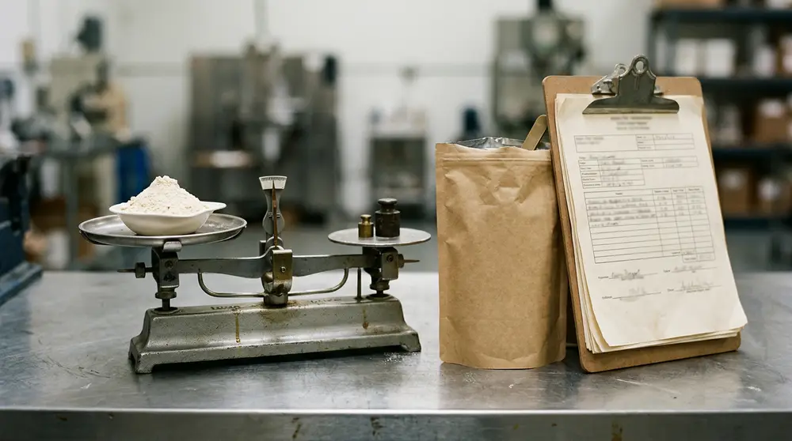
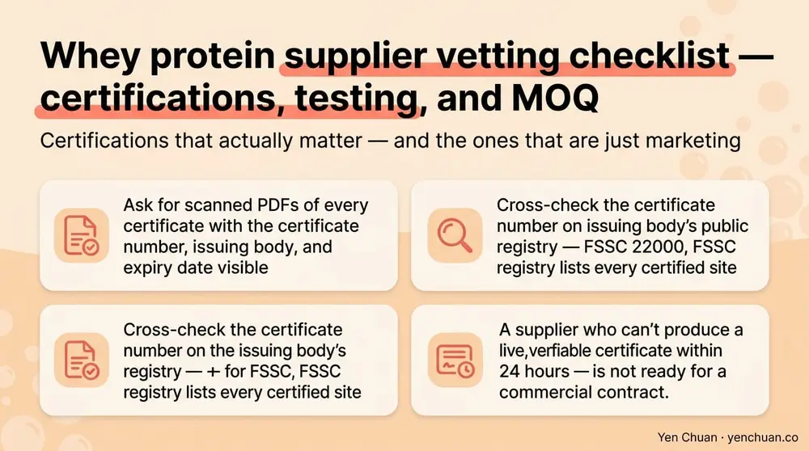
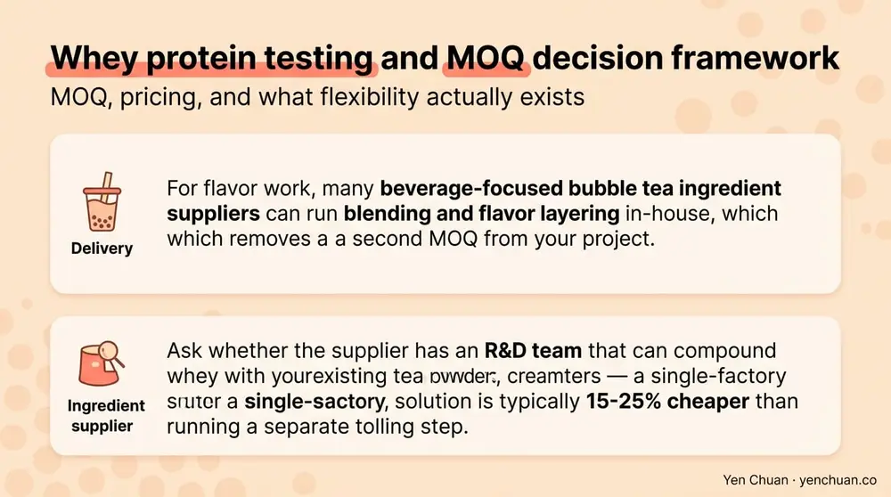

Articles / Business & sourcing
Whey Protein Supplier Checklist: Testing, MOQ & Certs
2026-04-15 · Sourcing, Industry Trends, Business

Whey protein moved from the supplement aisle into the beverage aisle over the past three years, and the buyers ordering it are no longer just sports nutrition brands. Boba chains adding protein milk tea, RTD coffee brands building high-protein lattes, and contract manufacturers spinning up private-label lines are all asking the same questions on their first call with us: which certifications actually matter, what testing should I demand on every lot, and what's a realistic MOQ for a beverage program? This checklist is the one we wish every new buyer walked in with — twenty years of sourcing conversations, distilled into a vetting playbook you can use before signing a contract.
Why supplier vetting is harder for whey than for most beverage ingredients
Whey protein sits on a different risk curve than tea leaves or tapioca pearls. It's a dairy-derived nutraceutical, which means it lives under both food and supplement regulations — and the supply chain for it is notoriously opaque. The 2020 global melamine and protein-spiking cases taught the industry that nitrogen-based adulteration can fake a protein number on a spec sheet while delivering zero actual protein. A 2023 analysis from Grand View Research put the global protein ingredients market at USD 70+ billion, with whey still the dominant format for beverage applications — meaning demand is high enough that shortcuts happen.
For a B2B buyer, that translates into three concrete risks: economic adulteration (protein-spiking), allergen cross-contact (whey facilities often also handle soy, egg, and tree nuts), and mislabeling of protein form (WPC vs WPI vs WPH). Each of these kills a product line faster than a flavor miss. The checklist below is ordered by the questions that flush out those risks fastest on a supplier call.
Certifications that actually matter — and the ones that are just marketing
Not every logo on a spec sheet carries the same weight. Here's how the major certifications rank for a beverage-use whey buyer:
| Certification | Mandatory? | What it actually proves |
|---|---|---|
| FSSC 22000 or SQF Level 3 | Yes | Food safety system covering HACCP, prerequisite programs, and food fraud |
| ISO 17025 testing lab | Yes (supplier's lab) | Analytical results are lab-accredited, not in-house estimates |
| FDA Registration + FSVP-ready | Yes for US | Supplier can produce the documentation your FSVP importer will need |
| Halal (JAKIM, IFANCA) | Conditional | Required only if your end market demands it |
| Kosher (OU, OK, Star-K) | Conditional | Required for kosher end markets |
| Informed Sport / NSF Certified for Sport | Conditional | Needed if you sell to athletes or military — overkill for most boba chains |
| "GMP" alone on a brochure | No | Meaningless without naming the specific standard (cGMP, PIC/S GMP, etc.) |
| "Premium grade" / "export grade" | No | Marketing language, not a certification |
Ask for scanned PDFs of every certificate with the certificate number, issuing body, and expiry date visible. Cross-check the certificate number on the issuing body's public registry — for FSSC 22000, the FSSC registry lists every certified site. A supplier who can't produce a live, verifiable certificate within 24 hours is not ready for a commercial contract.

The testing data you should require on every lot
A Certificate of Analysis (COA) is only as good as the tests behind it. For whey protein destined for beverage use, here's the minimum test panel we recommend buyers specify in their purchase agreement:
Compositional tests — protein by Kjeldahl and by amino acid nitrogen (the gap between these two numbers is how you catch nitrogen-spiking), moisture, fat, ash, lactose, and pH. Reject any COA that only reports "protein" without specifying the method.
Microbiological panel — total plate count, coliforms, E. coli, Salmonella, Staph aureus, yeast, and mold. Salmonella and E. coli must be reported as "not detected in 25g." This is the same panel USDA's dairy grading program applies to Grade A dry whey.
Heavy metals and contaminants — lead, arsenic, cadmium, mercury, and aflatoxin M1. California's Prop 65 has driven lead thresholds below 0.5 ppm for daily-consumption products; aflatoxin M1 must be below 0.5 ppb per EU and FDA limits.
Allergen verification — not just "may contain," but an ELISA test result for soy, egg, and tree nuts if your facility shares lines. A good supplier will provide allergen cross-contact risk assessments on request.
Functional tests (for RTD applications) — solubility index, foam stability, and heat stability at pH 6.8-7.2. Whey that performs in a dry stick pack may precipitate or form haze in a pasteurized RTD. Ask for functional data at your target process conditions, not generic spec-sheet numbers.
Request the most recent three lot COAs before you commit to a contract. Compare batch-to-batch variation on protein content — a well-controlled supplier will stay within ±0.5% across lots. Swings of 2% or more signal inconsistent incoming milk or sloppy standardization.
MOQ, pricing, and what flexibility actually exists
Whey protein MOQ varies by form and by how much custom work you're asking for. Here's the realistic range we see across Asian and European suppliers in 2026:
| Product | Standard MOQ | Custom spec MOQ | Private-label MOQ |
|---|---|---|---|
| WPC 80 (bulk, 25kg bags) | 1 metric ton | 5 MT | 10 MT |
| WPI 90 (bulk, 20kg bags) | 500 kg | 2 MT | 5 MT |
| Instantized whey for beverages | 1 MT | 3 MT | 8 MT |
| Flavored whey blends | 200 kg | 500 kg | 1 MT |
Pricing for WPC 80 ran USD 8.50-11.20 per kg FOB Asia through Q1 2026, with WPI 90 at USD 14-18 per kg. These numbers track the CLAL international dairy price index and move with raw milk and cheese whey availability — expect quarterly repricing clauses in any 12-month contract.
A tip we give every first-time buyer: don't negotiate purely on price-per-kg. Negotiate on landed cost per gram of protein. A WPC 80 at USD 10/kg delivers 800g of protein per kilo, so your real cost is USD 12.50 per kg of protein. A WPI 90 at USD 16/kg delivers 900g, making your real cost USD 17.80 per kg of protein. Then layer in solubility performance, allergen risk, and MOQ flexibility. The cheapest kilo rarely wins on TCO.
For flavor work, many beverage-focused bubble tea ingredient suppliers can run blending and flavor layering in-house, which removes a second MOQ from your project. Ask whether the supplier has an R&D team that can compound whey with your existing tea powders, creamers, and stabilizers — a single-factory solution is typically 15-25% cheaper than running a separate tolling step.

Red flags on a first supplier call
After twenty years of vetting, these are the signals that tell us a supplier isn't ready for a beverage-grade contract:
- The sales rep answers testing questions with "our quality is premium" instead of naming specific test methods.
- COAs arrive as flat JPEGs without lab letterhead, certificate numbers, or analyst signatures.
- The factory can't confirm its own auditing body or audit date.
- MOQ drops dramatically the moment you mention a big brand name — legitimate MOQs are tied to batch economics, not deal size.
- The quote includes "sample batch free" without any batch documentation — free samples that don't come with a COA are marketing samples, not production samples.
- The supplier refuses a third-party inspection at loading. Any serious exporter accepts SGS, Bureau Veritas, or Intertek loading supervision at the buyer's cost.
None of these are automatic dealbreakers in isolation. Two or more in the same conversation usually are.
Sourcing strategy: single-source vs dual-source
Whey supply is concentrated in the US, Europe, Oceania, and increasingly in Asia for regional blending. Most mature beverage programs run a primary supplier for 70-80% of volume and a qualified secondary source for the remaining 20-30%. The secondary isn't just about redundancy — it keeps your primary honest on pricing and gives you a fallback if a lot fails QC.
For buyers building beverage lines in Asia, sourcing from a Taiwan-based blender that imports bulk whey from certified New Zealand or European dairies often lands at better landed cost than direct-from-origin, because regional consolidation absorbs freight and customs friction. The same logic shows up in our Taiwan vs China vs Southeast Asia sourcing comparison — one account, multiple origin certificates, simpler paperwork. For the full supplier-vetting playbook beyond whey, our milk tea supplier guide covers the procurement process end-to-end.
Sources
- FDA — Chemical Contaminants in Food
- Grand View Research — Protein Ingredients Market Analysis
- USDA AMS — Dairy Grades and Standards
- CLAL — International Dairy Market Data
- FSSC 22000 — Public Certificate Registry
About Yen Chuan
Yen Chuan has been at the heart of Taiwan's bubble tea industry for over 20 years, supplying premium powders, syrups, tapioca pearls, and tea leaves to thousands of boba shops worldwide. With an in-house R&D lab and a commitment to quality ingredients, Yen Chuan is more than a supplier — we're your partner in the boba business. Our team has walked hundreds of buyers through whey protein vetting for high-protein milk tea and RTD projects, from first COA review to full-container shipment, and we pre-vet every dairy origin in our blended products so you don't inherit a sourcing surprise downstream.
Work with a supplier who passes the checklist
Planning a high-protein milk tea line or a whey-fortified RTD? Browse our ingredient catalog or talk to our sourcing team — we ship from Taiwan with full COAs, lab-verified certifications, and MOQ flexibility for pilot programs.
Frequently Asked Questions
Q: What certifications should a whey protein supplier hold at minimum?
A: At minimum, a beverage-grade whey supplier should hold FSSC 22000 or SQF Level 3 for food safety, be FDA-registered if you ship to the US, and work with an ISO 17025-accredited testing lab. Halal, kosher, and sport certifications are market-dependent add-ons. Verify certificate numbers on the issuing body's public registry before placing any order.
Q: How do I know if the protein on the COA is real?
A: Request protein measured by both Kjeldahl (total nitrogen) and amino acid nitrogen. The gap between the two methods reveals non-protein nitrogen — if the difference is greater than 1-2%, it signals possible nitrogen spiking with compounds like melamine or urea. Legitimate COAs also include the lab's ISO 17025 accreditation number and the analyst's signature.
Q: What's a realistic MOQ for whey protein in 2026?
A: Standard bulk WPC 80 starts at 1 metric ton per order, WPI 90 at 500 kg, and custom-flavored whey blends at 200 kg. Private-label projects with custom packaging typically require 8-10 MT commitments. Smaller buyers should consolidate through a distributor or a full-line ingredient supplier that already holds whey inventory.
Q: How much does whey protein cost wholesale?
A: Through Q1 2026, WPC 80 ran USD 8.50-11.20 per kg FOB Asia, and WPI 90 ran USD 14-18 per kg. Prices track global dairy indices like CLAL and move quarterly with milk and cheese whey availability. Negotiate on cost-per-gram-of-protein rather than cost-per-kg to compare WPC and WPI on equal footing.
Q: Should I single-source or dual-source whey protein?
A: Most mature beverage programs run a primary supplier for 70-80% of volume and a qualified secondary for 20-30%. Single-sourcing saves paperwork but concentrates risk — one failed lot or export disruption can stop your line. Dual-sourcing also keeps your primary supplier competitive on price and service.